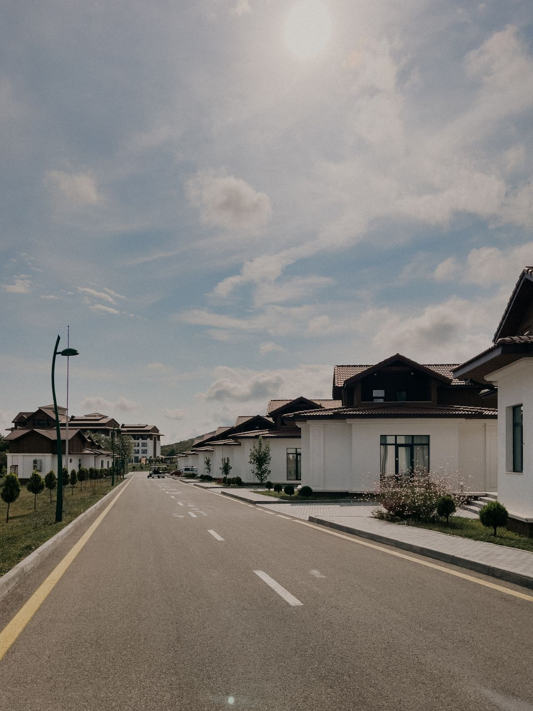
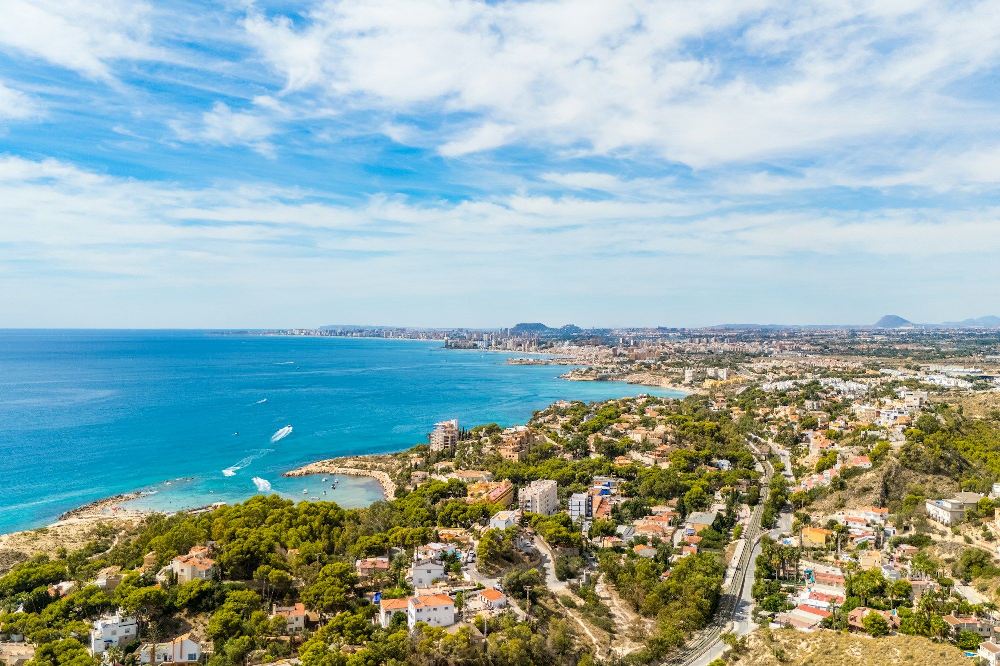
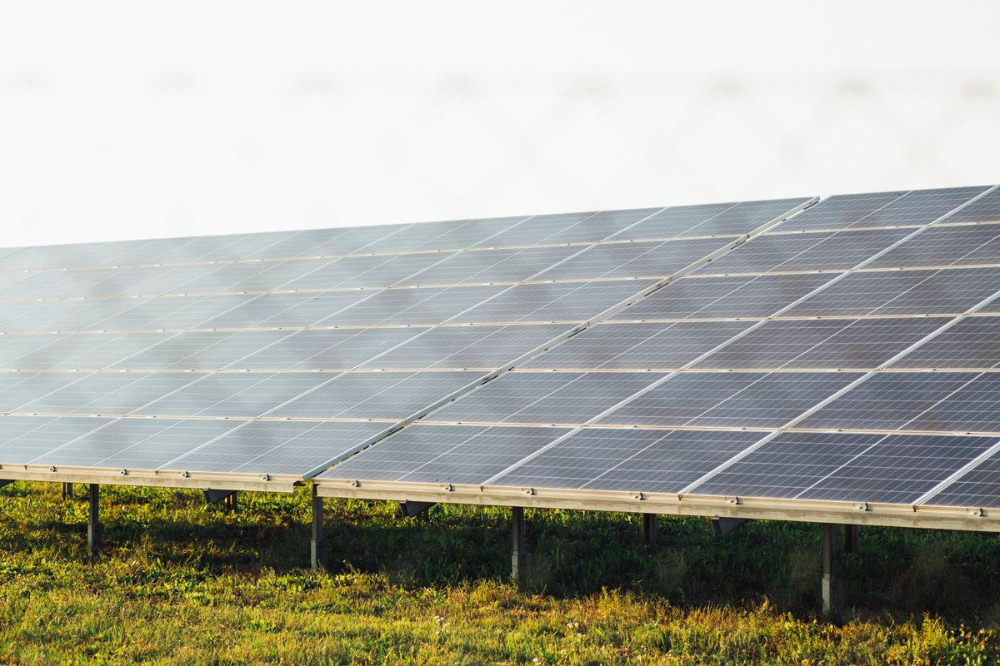
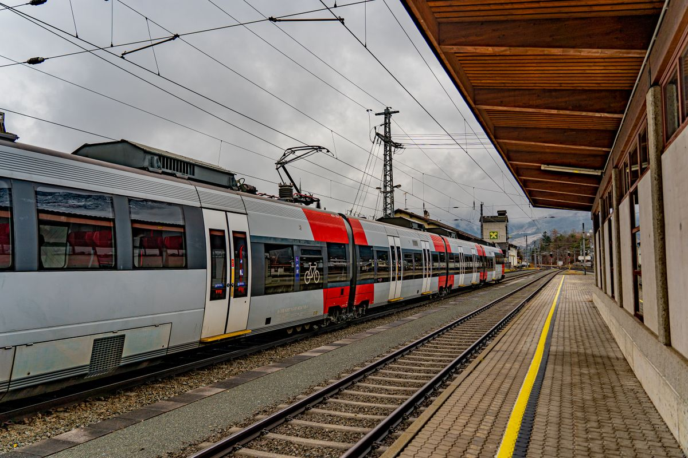

01 / HOMESMore homes.
More possibility.
Make secure renting and home ownership achievable. Build more, maintain quality and put homes to use.
Our housing commitmentTHE NEW PROGRESSIVE PARTY
A country that works for its people.
A future we build together.

Progress is
a choice.
Let’s make it.
OUR SHARED CONVICTION
Freedom means more when you have a secure home, a good education and care when you need it.
The New Progressive Party brings together liberals, centrists and environmentalists around a common purpose: a fairer Caprica. We believe public power should serve the citizen, and every policy should be judged by the difference it makes.
Get to know our commitmentsTHE PLAN FOR PROGRESS
Concrete commitments.
A country moving forward together.

01 / HOMESMake secure renting and home ownership achievable. Build more, maintain quality and put homes to use.
Our housing commitment
02 / CLEAN ENERGYInvest in nuclear energy, renewables and research. Set a firm limit on emissions and finance a greener future.
Our climate commitment
03 / CONNECTIONHigh-speed rail between state capitals. Better links between rural communities and urban centres.
Our transport commitmentTHE MANIFESTO / 2064
Know what we stand for. Explore the commitments behind our vision for Caprica.
Read the full manifestoA constitutional convention for a Third Republic, with a parliamentary government accountable to elected representatives and meaningful powers for the regions.
A fairer Land Value Tax that encourages denser housing, restoration of the Motor Vehicle Tax, and inflation-linked taxes on emissions, fuel and harmful products.
Balance the budget first, then use remaining revenue for clean energy and social institutions. Keep healthcare, transport and education under public ownership.
Read chapter II · page 5 ↗Equal protection regardless of sex, sexuality, gender identity, ethnicity, religion or region. Enforce equal pay, recognise diverse family structures and extend parental leave.
Protect expression, assembly and organising, with the manifesto's stated restrictions on advocacy for extremist movements that undermine constitutional democracy. Regulate cannabis and low-risk substances, prioritise rehabilitation, and pair controlled immigration with humane treatment.
Expand shelters and guarantee emergency care and access to critical medication for people unable to afford it.
Read chapter III · pages 6–7 ↗Publicly funded, universally accessible education from primary school through university. Raise teacher salaries and recruit, train and retain educators across every region.
The proposed Caprican School of Meritocratic Development would offer high-performing students residential pathways in military, scientific and political-economic studies, with mental health and wellbeing support.
Read chapter IV · pages 8–9 ↗Establish research and development centres across the regions, protect scientific independence and create an R&D tax credit accessible to small firms and start-ups.
Maintain and develop nuclear and renewable energy as part of a diversified national energy policy.
Read chapter V · page 10 ↗Expand the publicly administered health system and address regional inequalities in access to care. Private providers may supplement public care.
Negotiate directly on medicine prices, guarantee essential medication for those unable to afford it, and cover qualifying emergency or life-threatening private care through public reimbursement for people without the means to pay.
Read chapter VI · page 11 ↗Liberalise planning and building rules to increase housing supply while maintaining construction safety and quality. The manifesto favours expanding supply over rent control.
Introduce a progressive multi-property tax from the third residential property onward. Build high-speed rail between every state capital and improve rural-to-urban transit connections.
Read chapter VII · page 12 ↗Limit any single private entity to owning one media organisation. Establish transparent social media accounts to correct disinformation using verified facts, published methods and independent oversight.
Read chapter VIII · page 13 ↗Deepen engagement with the Columbian Union and support federalist reform. Maintain a professional, properly equipped defence force under clear civilian oversight.
Pursue free and open trade, with exceptions for nations that pose strategic or security threats to Caprica.
Read chapter IX · page 14 ↗Replace the carbon tax with a cap-and-permit system: a hard emissions limit, tradable allowances and a price floor backed by cancelling allowances when prices fall below the threshold.
Create a national green investment bank and use targeted public investment, procurement and market commitments to support clean infrastructure.
Read chapter X · page 15 ↗ONE PARTY. A SHARED PURPOSE.
Bring the ideas into your community.
Start a conversation. Share the plan. Help move Caprica forward.
{kind=link}